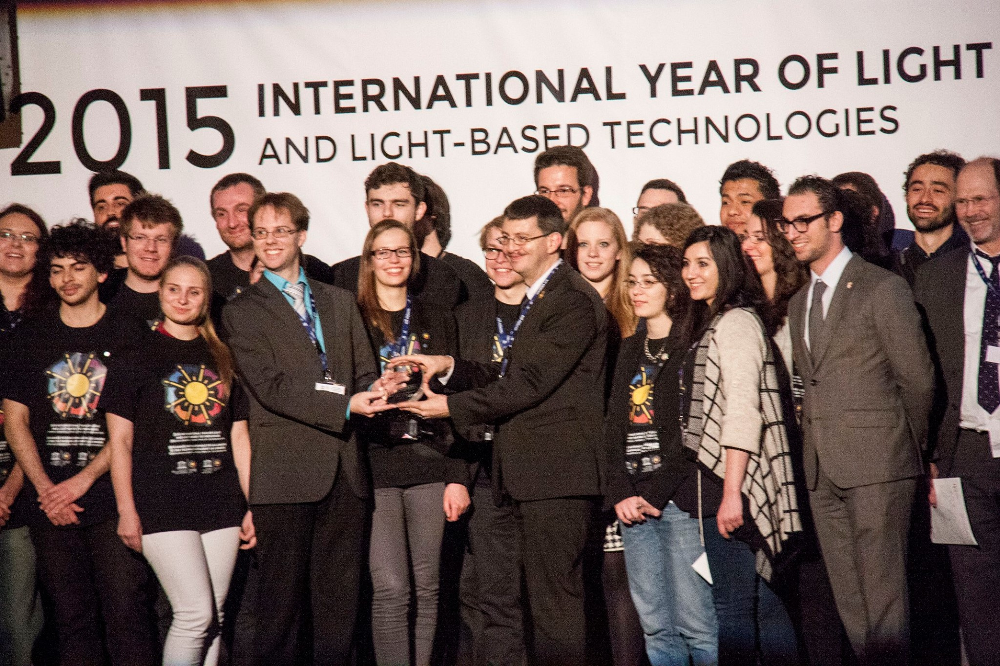

IAPS - The International Association of Physics Students
IAPS was founded in 1987 to promote peaceful relations among physics students from all over the world and to encourage them in their work in an international context. IAPS consists of physics students and student societies from all around the globe which are represented by national and local committees.
The main event of IAPS is the annual International Conference of Physics Students (ICPS), but IAPS also organises other events for its members like summer schools, trips to international research facilities (e. g. to CERN), competitions and supports joint activities between physics students of different countries. Besides that IAPS publishes the journal jIAPS which contains physics related articles written by students for students and also informs about different activities of IAPS members. The journal is distributed during the ICPS for free.
During the year IAPS is administrated by an executive committee (EC) consisting of physics students which are elected at the annual general meeting at the ICPS. If you are interested and want to support the work of IAPS you can contact the EC: ec(at)iaps.info
As a recognized non-governmental organisation IAPS also collaborates with other international and national bodies as the European Physical Society, the Institute of Physics, the American Physical Society and the German Physical Society.
More information on IAPS and its history is available under the IAPS webpage.